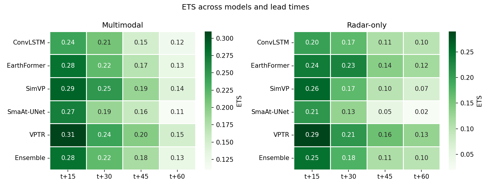
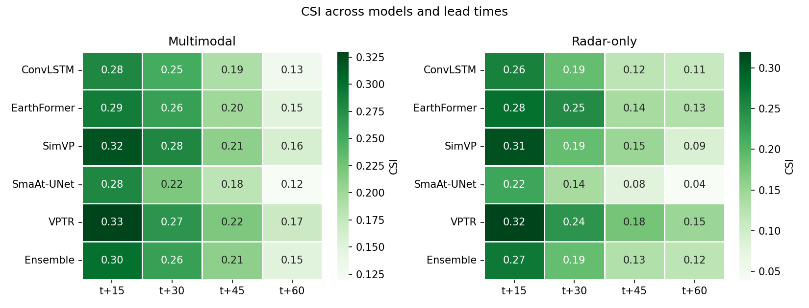
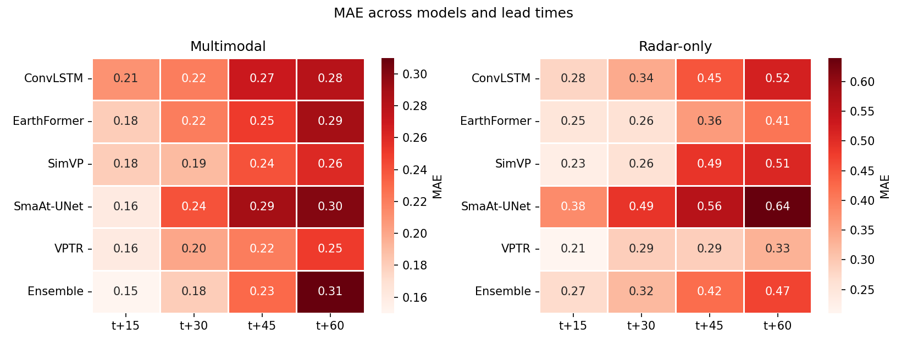
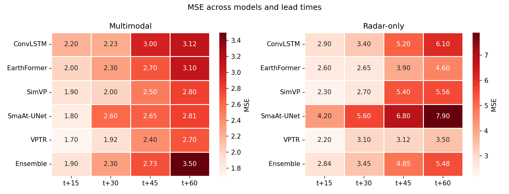
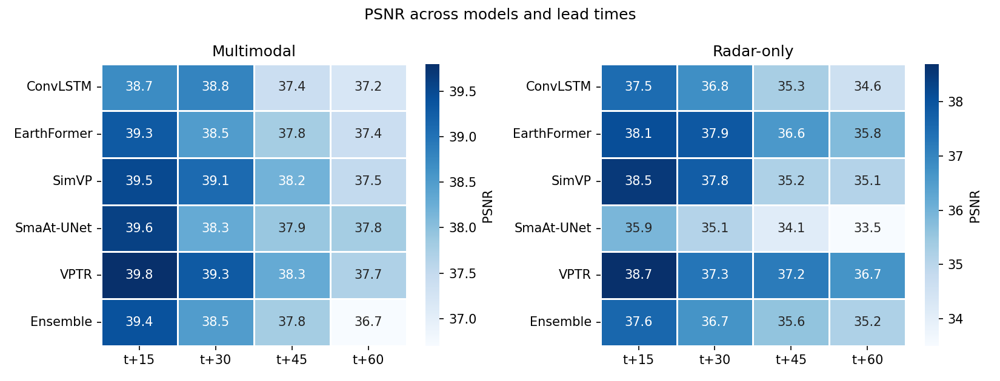
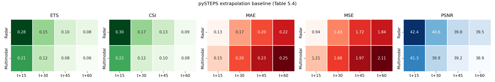

Results & Findings
Two input configurations
where \(B\) is batch size and \(T=4\) input timesteps. The two configurations differ only in channel composition, enabling a direct, controlled comparison.
pySTEPS baseline configuration (Table 5.3)
Extrapolation settings were selected via grid search on a held-out validation subset (scored by pooled CSI/ETS at 5 and 15 mm/h, averaged over the 15 and 30 minute lead times), then applied unchanged to the test set:
| Parameter | Search space | Selected |
|---|---|---|
| Motion estimation method | LK, VET | LK |
| Nowcast method | Extrapolation, S-PROG | Extrapolation |
| Extrapolation interpolation | Nearest, Bilinear | Bilinear |
| History frames | 3, 5 | 5 |
| Persistence blending | On, Off | Off |
Dataset scale
| Radar (RADOLAN) | Satellite (SEVIRI CH7 + CH9) | |
|---|---|---|
| Period | 2015–2024 (3,653 days) | 2015–2024 (3,653 days) |
| Cadence | 5 minutes | 5 minutes |
| Images per day | 288 | 288 per channel |
| Native resolution | 1100 × 900 | 175 × 320 (regridded to radar grid) |
Performance across models and lead times





pySTEPS extrapolation baseline

Headline results
- No single architecture wins on every metric. VPTR achieved the strongest categorical performance (ETS, CSI) across most lead times; the ensemble was competitive at shorter horizons but its ranking declined as lead time increased.
- Satellite fusion helps deep learning models, not the classical baseline. The multimodal configuration generally outperformed radar-only across the five architectures, but the pySTEPS extrapolation baseline did not benefit from adding satellite input — its accuracy declined instead.
- Deep learning vs. extrapolation is a trade-off, not a clean win. pySTEPS [12] radar-only achieved lower MAE/MSE and higher PSNR than every deep learning model at every lead time, while the deep learning models achieved modestly higher CSI/ETS — consistent with the "double penalty problem" [64] in nowcasting verification (smooth extrapolation forecasts minimize pixel-wise error but under-detect sharp, localized events).
- Intense convective precipitation remains the hardest case for every architecture, primarily because high-intensity events are underrepresented in the training data.
Hypothesis discussion
H1 — architecture affects performance. The relative ranking of architectures was not fixed; it shifted with input configuration and metric. At t+60, SimVP's ETS fell about 50% moving from multimodal to radar-only input, while ConvLSTM's fell only about 17% — architecture choice mattered most precisely where less input information was available.
H2 — multimodal input improves forecasts. Across the deep learning models, multimodal input generally outperformed radar-only, with the gap widening at longer lead times (e.g. the ensemble's MSE advantage grew from 1.90 vs. 2.84 at t+15 to 3.50 vs. 5.48 at t+60). This benefit did not extend to the pySTEPS baseline, whose PSNR declined after satellite input was added — the benefit of satellite fusion is architecture-dependent.
H3 — ensembling improves performance. The ensemble held its own on skill scores but the advantage faded on error-based metrics as lead time increased: at t+60 (multimodal), its MSE was about 30% higher and MAE about 24% higher than VPTR, the best individual model. Simple averaging did not consistently retain the strongest individual model's performance — targeted combination strategies (weighted averaging, stacking) are suggested as future work.
Limitations
- Only 2 of SEVIRI's 12 spectral channels (CH7, CH9) were used.
- No additional meteorological variables (temperature, humidity, wind, lightning) were incorporated.
- Evaluation is limited to the 2024 test period and June–September (JJAS) months only.
- Only one loss formulation (the hybrid weighted MAE) was evaluated; no statistical significance testing was performed on the reported metric differences.
- Training was capped at 50 epochs with early stopping; generative [20], diffusion-based [22], and transfer-learning [66] approaches were out of scope.
Future work
- Add further SEVIRI channels, lightning data [65], and NWP fields as inputs.
- Explore feature-level / intermediate fusion instead of input-level concatenation.
- Improve representation of intense convective events via targeted sampling or additional seasons/regions.
- Investigate weighted or learned ensemble strategies (potentially varying by lead time) instead of simple averaging.
- Apply explainability (XAI) techniques (saliency maps, attention visualization) to understand how satellite channels contribute to predictions.
- Evaluate across multiple years and geographic regions to assess generalization.